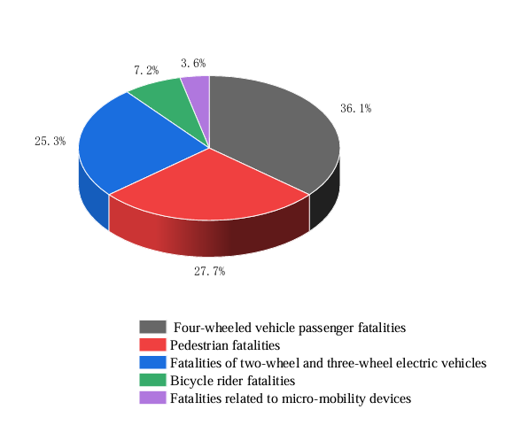
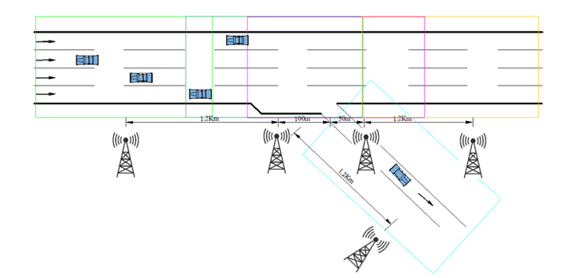
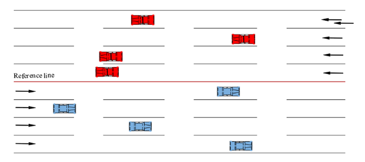

The proportion of transportation modes globally involved in causing traffic accidents

Deployment method of Road Section Management Units at highway ramp exits.

The diagram for selecting the reference line of a highway with an integral roadway profile.